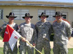

|
D Company, 2/8th Cav, Operation Iraqi Freedom (OIF), 2006-2008
"I have found that being a soldier's
father is tougher than being a soldier." |
|
|
"The
2-8th Cav, Company D (DEMON) has reorganized into two tank
platoons and two infantry platoons. They are attached to the 1st
Brigade. Co. D, 2nd Battalion, 8th Cavalry Regiment, 1st Cavalry
Division. Every soldier is now a veteran.
They have seen firefights, mortars, RPGs, and IEDs. . . . they
have all been tested and each performed well under fire. The
company commander is CPT Mike Doyle and the First Sergeant
is
1SG Ricky
Linton.
The Platoon Leader and Platoon
Sergeant for each platoon are:
DEMON - CPT Mike Doyle &
1SG
Ricky Linton White and Green are the Infantry Platoons. Most of the company is on its second tour. I would say that half of the company was here with the CAV last time. Some of the others were with other units. I'd say less than a third of the company are here for the first time." by 1SG Tramel, D 2-8CAV in Iraq |
|
|
Demon Change Of Responsibility

Press
releases from 1BCT HQ for the valorous awards earned D 2-8th CAV returned home in January, 2008 Photos from our D 2/8 soldiers in Iraq Demon Company Photos Posted at Shutterfly |
|
|
Tajii Times Edition 17 |
Family Readiness Group Letter January 2008 |
|
Update from 1SG Tramel 6 July 07 |
Christmas Family Readiness Group Letter 2007 |